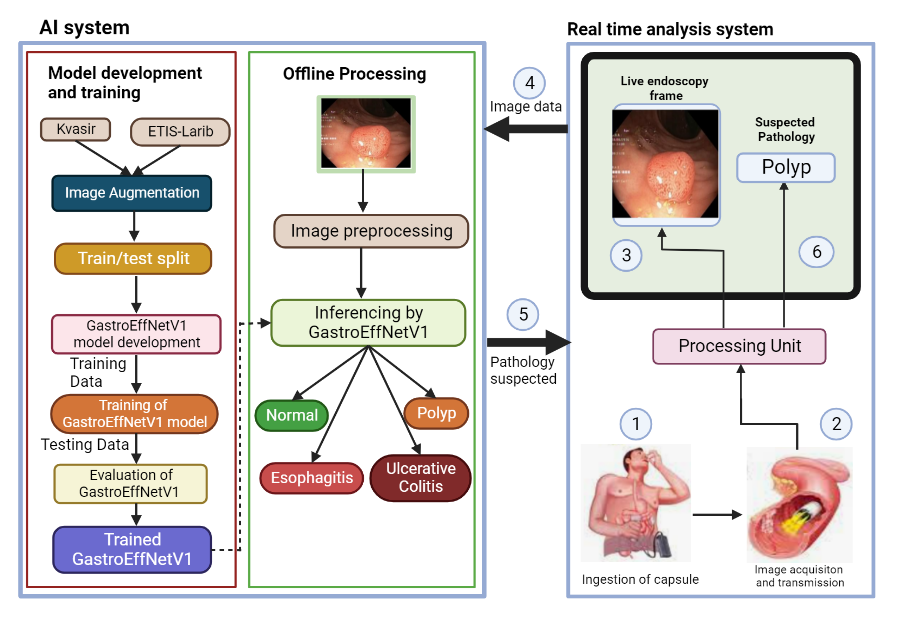
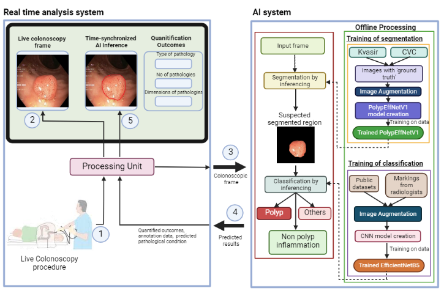

Publications
Research Papers, Conference Papers & Books

Multimodal Gas Detection Using E-Nose and Thermal Images
CMC (Computers, Materials & Continua), 2025
Collaborators
Avignon Université, Symbiosis Institute of Technology
A multimodal approach combining electronic nose sensor data and thermal imaging for gas detection and classification using deep learning methods.

ML Predictive Model for Ureteroscopy Outcomes in Pediatric Population
Journal of Endourology (SAGE), 2024
Collaborators
University of Southampton NHS
A machine learning predictive model for ureteroscopy outcomes in pediatric populations, developed in collaboration with University of Southampton NHS.
PolyEffNetV1: A CNN based colorectal polyp detection in colonoscopy images
SAGE Journals, 2023
Collaborators
Saravanan R
Development of deep learning algorithms for segmentation, classification and quantification of polyps using colonoscopy images.
GastroEffNetV1: CNN based Automated Detection of GI Abnormalities
Pre-print — Research Square
Collaborators
Krithika G K, Dhanusha P, Chandrashekar G E, Harini C S
Deep learning algorithm for automated diagnosis of gastrointestinal abnormalities from capsule endoscopy images.

Integrated system for detection of diabetes using deep learning
ICA5NT Conference
Collaborators
Saranya R, Sruthi H, Sameena
Integrated diagnostic system for diabetes using deep learning across fundus imaging, thermal imaging, dermal imaging and OCT modalities.

Integrated deep learning framework for breast cancer diagnosis using medical imaging
ICA5NT Conference
Collaborators
Samyuktha Kapoor, Nithila J
Integrated system for breast cancer diagnosis, confirmation and follow-up analysis using deep learning and medical imaging modalities.

VOLUME 1 — KNEE OSTEOARTHRITIS
E-book (Amazon)
Collaborators
Sudha S, Saravanarajan S
Comprehensive book covering the history, pathology and modern developments in knee osteoarthritis diagnosis and treatment.